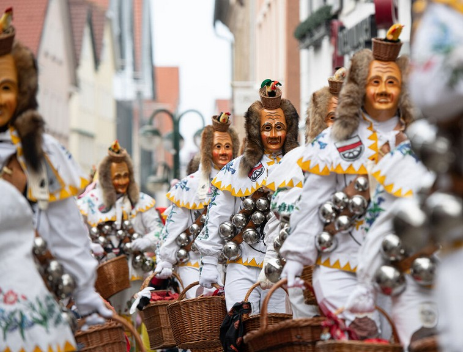

Reise nach Ravensburg
Datum: 12. Februar 2025
Abfahrt: 10:00 Uhr, Busbahnhof Hechingen
Freie Plätze: 14 von 50
Erlebe den legendären Ringumzug in Ravensburg mit Musik, Spaß und traditioneller Fasnet! Wir bringen dich sicher hin und zurück – mit moderner Ausstattung, Snacks und bester Stimmung.